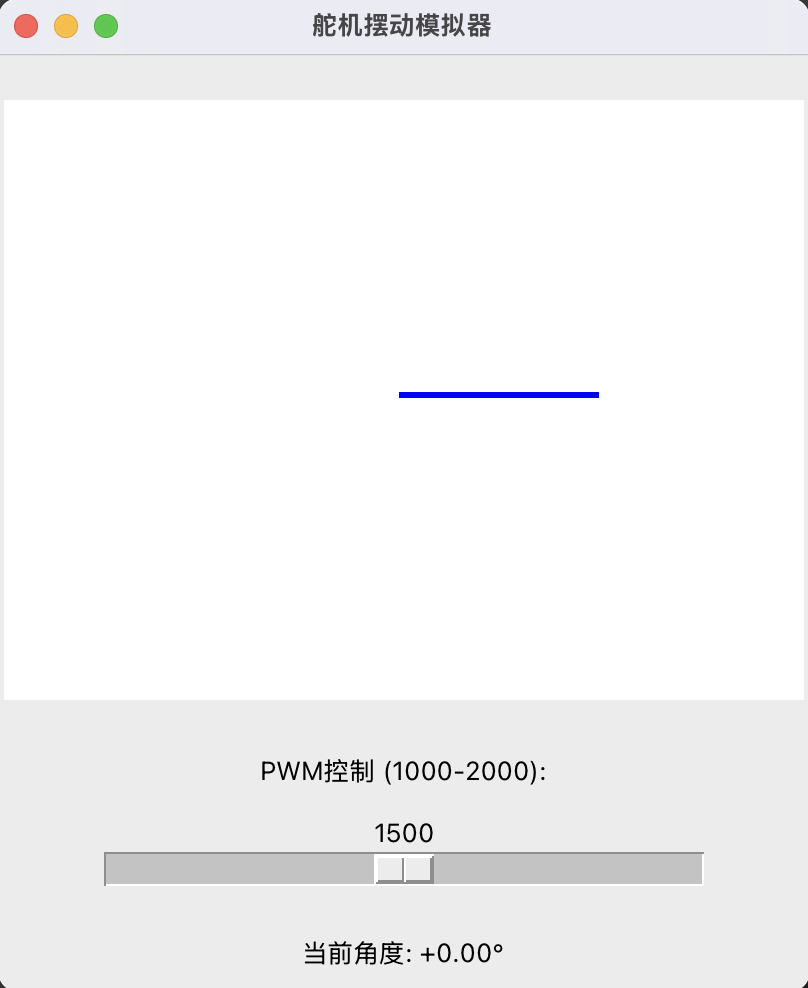

运行效果如上，
这是一个用Python tkinter开发的舵机摆动模拟器，用于调试舵机控制代码。模拟器包含一个SwingArm类模拟舵机运动（固定速度180度/秒），通过滑动条输入PWM信号（1000-2000对应-45°至45°）。GUI显示当前角度和摆臂位置，每50ms更新一次状态。使用前需安装python-tk，主要功能包括：PWM到角度转换、平滑角度过渡和实时可视化。该工具便于开发者测试舵机控制算法而无需实际硬件。
1.需要安装python-tk 如
brew install python-tk
2. class SwingArm 是舵机，它的速度是固定的，为180.0度/秒
3. 滑条模拟输入的pwm
代码如下：
import tkinter as tk
import math
class SwingArm:
def __init__(self):
self.current_angle = 0.0 # 当前角度（-45~45）
self.target_angle = 0.0 # 目标角度
self.speed = 180.0 # 180.0度/秒
def set_target(self, pwm):
# PWM映射到角度（1000→-45°，2000→45°）
self.target_angle = (pwm - 1500) * 0.09
def update(self, delta_time):
# 计算移动方向和距离
angle_diff = self.target_angle - self.current_angle
if abs(angle_diff) < 0.1: # 到达阈值
return
direction = 1 if angle_diff > 0 else -1
max_step = self.speed * delta_time
step = min(abs(angle_diff), max_step) * direction
# 更新当前角度并限制范围
self.current_angle = max(-45.0, min(45.0, self.current_angle + step))
class ServoSimulator:
def __init__(self, master):
self.master = master
master.title("舵机摆动模拟器")
# 界面布局
self.canvas = tk.Canvas(master, width=400, height=300, bg='white')
self.canvas.pack(pady=20)
# PWM输入控件
# 删除原有Entry控件，添加滑动条
self.pwm_label = tk.Label(master, text="PWM控制 (1000-2000):")
self.pwm_label.pack()
# 创建水平滑动条
self.pwm_slider = tk.Scale(master, from_=1000, to=2000, orient=tk.HORIZONTAL,
length=300, command=self.update_angle)
self.pwm_slider.set(1500) # 设置默认值
self.pwm_slider.pack(pady=10)
# 删除原有pwm_entry及其绑定
self.pwm_entry = tk.Entry(master)
self.pwm_entry.pack()
self.pwm_entry.insert(0, "1500")
# 角度显示
self.angle_label = tk.Label(master, text="当前角度: 0.00°")
self.angle_label.pack(pady=10)
# 绘制摆臂
self.arm = self.canvas.create_line(200, 150, 300, 150, width=3, fill='blue')
# 绑定输入事件
self.pwm_entry.bind("<KeyRelease>", self.update_angle)
# 新增初始化变量
self.current_angle = 0.0
self.direction = 1
# 初始化摆臂对象
self.swing_arm = SwingArm()
# 删除残留的pwm_entry相关代码
self.pwm_entry.pack_forget() # 隐藏输入框
self.pwm_entry.unbind("<KeyRelease>") # 解除事件绑定
# 启动动画循环
self.update_animation()
def update_angle(self, pwm_value):
# 将PWM值传给摆臂对象
self.swing_arm.set_target(int(pwm_value))
def update_animation(self):
# 更新摆臂状态（50ms间隔）
self.swing_arm.update(0.05)
# 更新界面显示
self.angle_label.config(text=f"当前角度: {self.swing_arm.current_angle:+.2f}°")
angle_rad = math.radians(self.swing_arm.current_angle)
x = 200 + 100 * math.cos(angle_rad)
y = 150 - 100 * math.sin(angle_rad)
self.canvas.coords(self.arm, 200, 150, x, y)
self.master.after(50, self.update_animation)
def update_angle(self, pwm_value=None):
try:
# 从滑动条获取值
pwm = int(pwm_value) if pwm_value else self.pwm_slider.get()
print(f"更新pwm: {pwm}")
self.swing_arm.set_target(pwm)
except Exception as e:
print(f"更新错误: {e}")
except ValueError:
self.angle_label.config(text="输入无效！")
if __name__ == "__main__":
root = tk.Tk()
app = ServoSimulator(root)
root.mainloop()